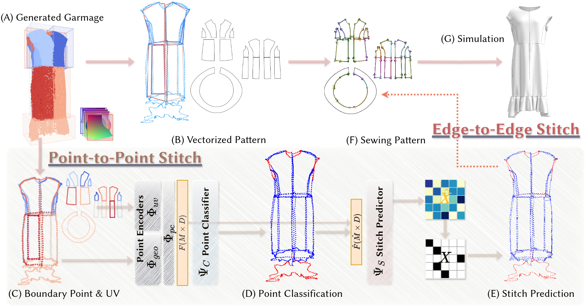

Method

Overview of the $\textbf{\textit{GarmageNet}}$ pipeline. During training, a sample garment (A) will be rasterized into a structured set of per-panel geometry images - Garmages (B), and encoded into a geometry latent space (C). During generation, we apply a two-stage diffusion process to re-produce the garment (D) asset based on its text descriptions or raw sewing patterns.
Overview of the $\textbf{\textit{PanelJigsaw}}$ pipline. Beginning with the generated Garmage (A), we predict point-to-point stitching using both 2D and 3D boundary point features (C-E). Simultaneously, we obtain vectorized pattern from Garmage (B). We then combine it with point-to-point stitching to get sewing pattern (F), which can be integrated into general garment modeling workflows and simulated for high-fidelity garments assets (G).